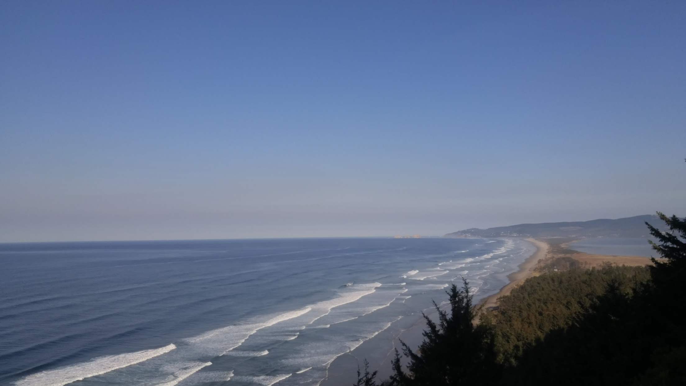
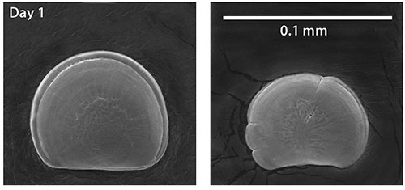
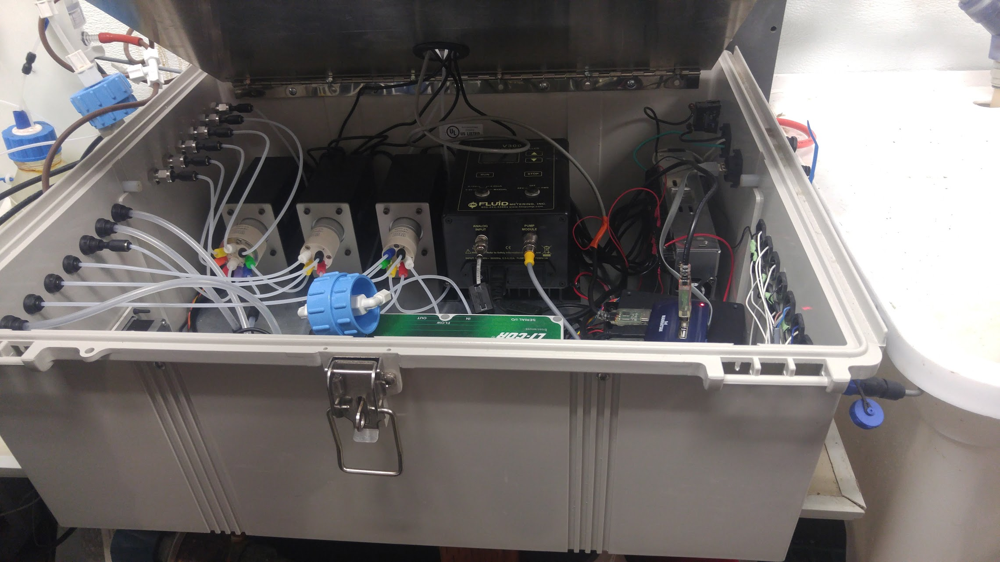

Adapting to Ocean Acidification in the Pacific Northwest
Case Study:
Whiskey Creek Shellfish Hatchery


Created by Brian G. Katz
Whiskey Creek
Whiskey Creek Shellfish Hatchery is located in Netarts Bay, Oregon. The water in this environment is especially favorable to shellfish growth because no major rivers feed into the bay.

Water from Netarts Bay is directly pumped into the hatchery where fertilized eggs of shellfish (e.g. oysters and mussels) are grown into larval "seed" for both commercial and restoration purposes.1
Once grown, shellfish seed is filtered through a screen to separate the larvae by size.
Importance to Network
Whiskey Creek is the largest shellfish hatchery in the United States and produces nearly 70% of the seed used by independent shellfish growers in the Pacific Northwest.
The Pacific Northwest shellfish industry supports thousands of people's livelihoods and contributes nearly $270 million per year to the regional economy.2 Many indigenous tribes across the PNW also place cultural value on shellfish, and have done so for millennia.
Oyster Seed Crisis
In the summer of 2007, Whiskey Creek Shellfish Hatchery experienced an unexpected loss of nearly 75% of their larvae due to a period of extreme OA. This sudden seed shortage had reverberating consequences for the regional network of shellfish stakeholders who depended on the seed produced by Whiskey Creek.
Researchers at Oregon State University began working closely with stakeholders at Whiskey Creek to assess the biological sensitivity of oyster larvae to OA and monitor estuarine water chemistry in real-time.
Damage to oyster larvae from acidified water (right) compared to healthy larvae (left).
Micrograph by Oregon State University
Adaptive Capacity
The seed crisis prompted urgent legislative action across the PNW, and new assets were unlocked for the purpose of combating continued OA risk.
Across the region, new scientific research and technologies were invested in by a number of federal, state, and local agencies.
Burkalator
pH sensor

Buffer

Buffered Water Pump

CO2 sensor
Post-Adaptation Success
In the last few years, Whiskey Creek has been able to return their seed production to levels unseen since before the seed crisis of the late 2000s.

Whiskey Creek Shellfish Hatchery is a shining example of how stakeholders faced with high exposure to ocean acidification can still overcome potential harm by following an adaptation pathway.